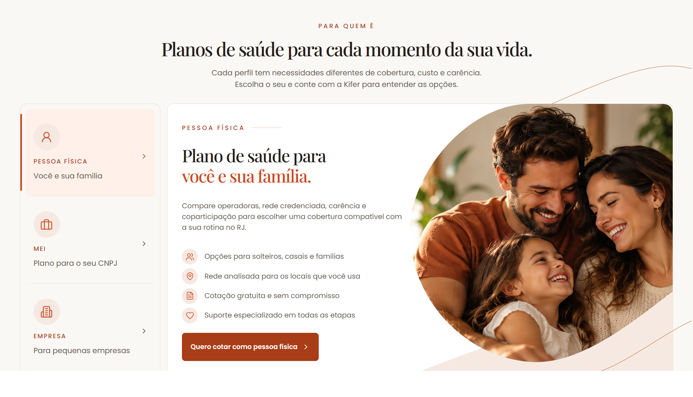

Kifer Saúde — Para quem é: referência e composição
Para quem é — referência, antes e depois
Recorte orgânico da foto, faixa decorativa atrás da imagem e enquadramento próprio para cada perfil. Textos, fotografias de origem e comportamento dos botões foram preservados.
A referência fornecida mostra o perfil Pessoa física. Clique em qualquer imagem para ver a captura no tamanho original.
Referência aprovada · Pessoa física
Antes deste ajuste
Após o ajuste